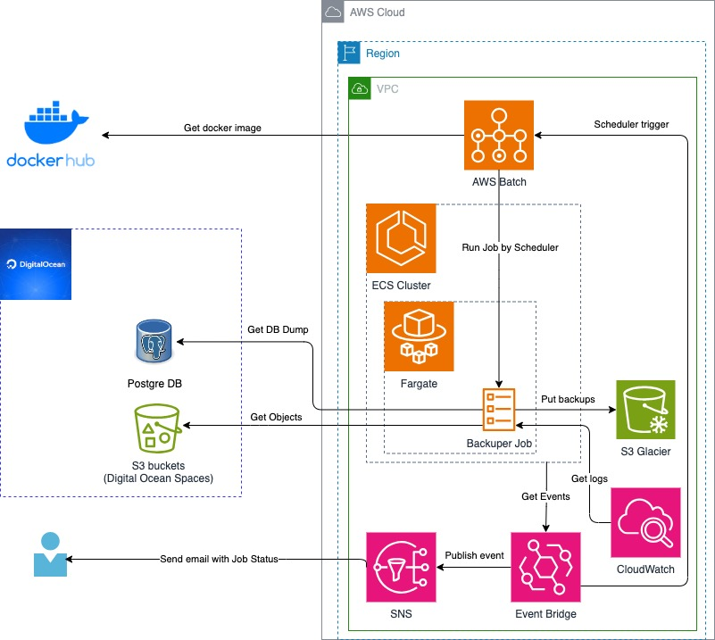
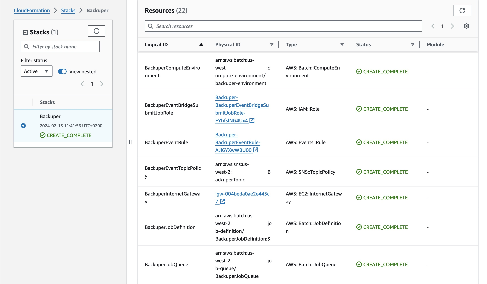
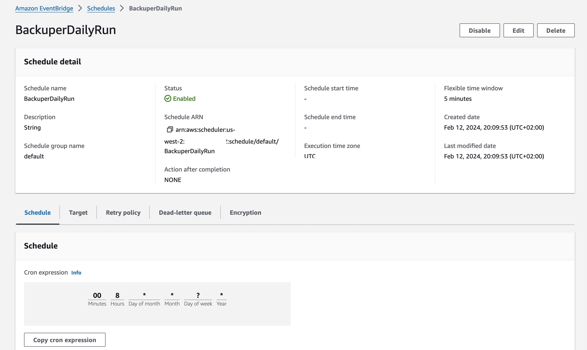
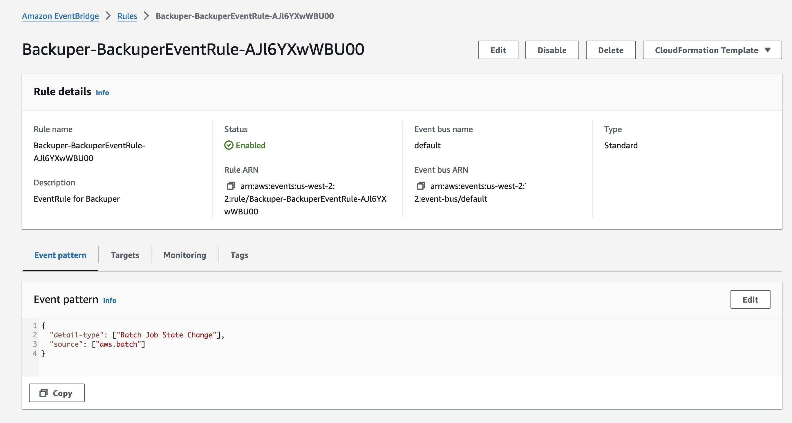
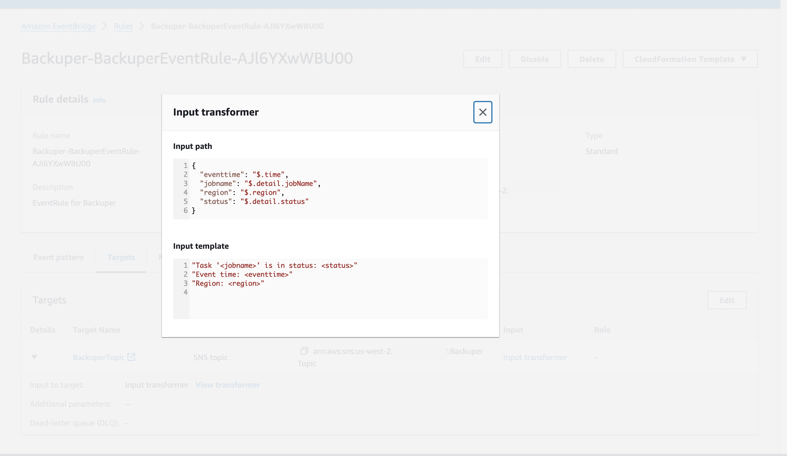
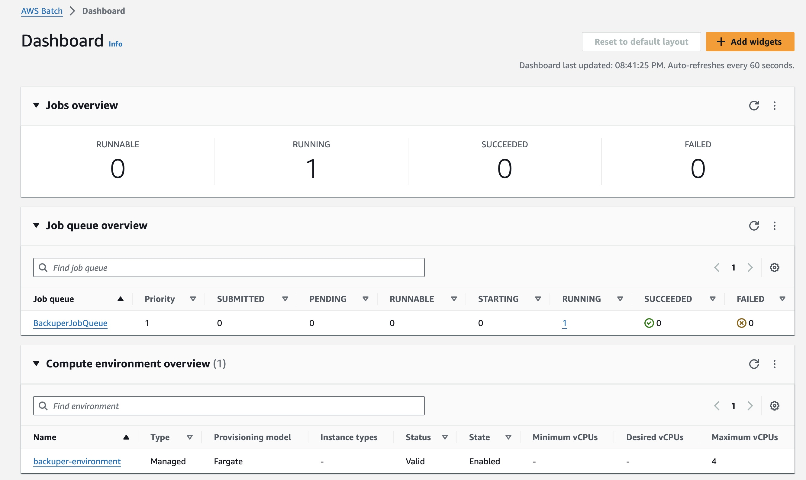
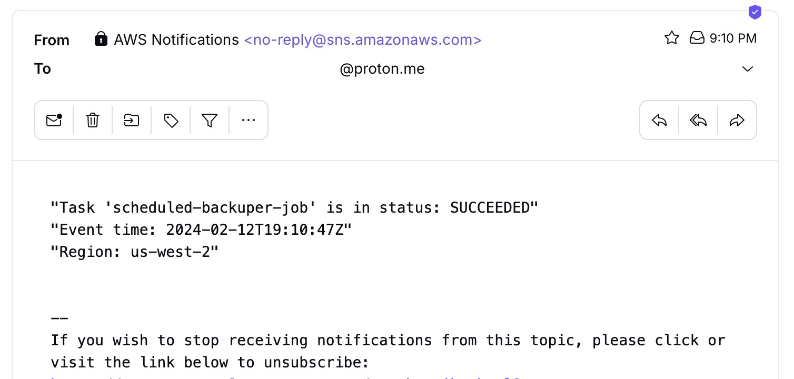

Sometimes we have to do dull tasks like setting up a backup system. We want to do it in the easiest and cheapest way possible. That's why I think AWS gives us lots of services to do it smoothly.
Because my computing stuff is on Digital Ocean, I couldn't use AWS Backup. So I looked at services that can provide infrequent workload and don't cost anything when they're not busy. For this plan, I picked AWS Batch with ECS on Fargate. And I use Event Bridge scheduler to start the jobs.
For this plan, I picked AWS Batch with ECS on Fargate. And I use Event Bridge scheduler to start the jobs.
This is a general picture of my solution.
I'm setting up everything using AWS CloudFormation.
...
BackuperComputeEnvironment:
Type: AWS::Batch::ComputeEnvironment
Properties:
Type: MANAGED
ComputeEnvironmentName: backuper-environment
ComputeResources:
MaxvCpus: 4
SecurityGroupIds:
- !Ref BackuperSecurityGroup
Type: FARGATE
Subnets:
- !Ref BackuperSubnet
Tags: {"Name" : "BackuperComputeEnvironment", "CreatedBy" : "CloudFormationStack", "App" : "Backuper"}
State: ENABLED
BackuperJobDefinition:
Type: AWS::Batch::JobDefinition
Properties:
Type: container
JobDefinitionName: BackuperJobDefinition
PlatformCapabilities:
- FARGATE
ContainerProperties:
Image: registry.hub.docker.com/andygolubev/backuper:latest
Environment:
- Name: AWS_BACKUP_DESTINATION_BUCKET
Value: !Ref awsBackupDestinationBucketName
- Name: DO_PG_USER
Value: !Ref doPgUser
- Name: DO_KEY
Value: !Ref doKey
- Name: DO_PG_DBNAME
Value: !Ref doPgDbname
- Name: DO_PG_HOST
Value: !Ref doPgHost
- Name: DO_SECRET
Value: !Ref doSecret
- Name: DO_REGION_ENDPOINT
Value: !Ref doRegionEndpoint
- Name: DO_PG_PORT
Value: !Ref doPgPort
- Name: DO_PG_PASSWORD
Value: !Ref doPgPassword
Command:
- /bin/bash
- -c
- /backuper/s3_backup_script.sh && /bin/bash -c /backuper/postgre_backup_script.sh
Privileged: false
JobRoleArn: !GetAtt BackuperAmazonECSTaskExecutionRole.Arn
ExecutionRoleArn: !GetAtt BackuperAmazonECSTaskExecutionRole.Arn
ReadonlyRootFilesystem: false
NetworkConfiguration:
AssignPublicIp: ENABLED
ResourceRequirements:
- Type: MEMORY
Value: 1024
- Type: VCPU
Value: 0.5
LogConfiguration:
LogDriver: awslogs
Options:
"awslogs-group": !Ref BackuperLogGroup
"awslogs-stream-prefix": "prefix"
Tags: {"Name" : "BackuperJobDefinition", "CreatedBy" : "CloudFormationStack", "App" : "Backuper"}
...
I use my Docker Image with built-in bash scripts.
FROM ubuntu:22.04
WORKDIR /tmp
# install tools
RUN apt update && apt -y upgrade && apt -y --no-install-suggests --no-install-recommends install wget unzip curl tree git jq gettext zip ca-certificates
# install aws cli v2
RUN curl "https://awscli.amazonaws.com/awscli-exe-linux-x86_64.zip" -o "awscliv2.zip" && \
unzip awscliv2.zip && \
./aws/install && \
aws --version
# install latest postgre tools
RUN apt -y install lsb-release gnupg2 --no-install-suggests --no-install-recommends && \
sh -c 'echo "deb http://apt.postgresql.org/pub/repos/apt $(lsb_release -cs)-pgdg main" > /etc/apt/sources.list.d/pgdg.list' && \
wget --quiet -O - https://www.postgresql.org/media/keys/ACCC4CF8.asc | apt-key add - && \
apt update && \
apt -y install postgresql-client
# make working folders
RUN mkdir /backuper; mkdir /backup; mkdir /backup_db
WORKDIR /backuper
# declare variables for s3_backup_script.sh
ENV DO_KEY=NOT_DEFINED
ENV DO_SECRET=NOT_DEFINED
ENV DO_REGION_ENDPOINT=NOT_DEFINED
ENV AWS_BACKUP_DESTINATION_BUCKET=NOT_DEFINED
# declare variables for postgre_backup_script.sh
ENV DO_PG_HOST=NOT_DEFINED
ENV DO_PG_PORT=NOT_DEFINED
ENV DO_PG_USER=NOT_DEFINED
ENV DO_PG_PASSWORD=NOT_DEFINED
ENV DO_PG_DBNAME=NOT_DEFINED
# create a buckets backup script inside the docker image
RUN echo "BUCKETS_ALL=\$(AWS_ACCESS_KEY_ID=\$DO_KEY AWS_SECRET_ACCESS_KEY=\$DO_SECRET aws s3 ls --endpoint=\$DO_REGION_ENDPOINT | awk '{print \$3}')" >> /backuper/s3_backup_script.sh
RUN echo '\
echo "This buckets will be processed: $BUCKETS_ALL" \n\
for BUCKET in $BUCKETS_ALL \n\
do \n\
echo "Processing bucket -> $BUCKET" \n\
mkdir -p /backup/$BUCKET/ \n\
AWS_ACCESS_KEY_ID=$DO_KEY AWS_SECRET_ACCESS_KEY=$DO_SECRET aws s3 cp --quiet --recursive --endpoint=$DO_REGION_ENDPOINT s3://$BUCKET /backup/$BUCKET/ \n\
ZIP_FILE_DATE_TIME=$(date +%Y-%m-%d--%H-%M) \n\
zip --recurse-paths --quiet /backup/$ZIP_FILE_DATE_TIME-UTC-$BUCKET-bucket_backup.zip /backup/$BUCKET/ \n\
aws s3 cp --storage-class GLACIER_IR /backup/$ZIP_FILE_DATE_TIME-UTC-$BUCKET-bucket_backup.zip s3://$AWS_BACKUP_DESTINATION_BUCKET \n\
echo "Successfully Processed -> $BUCKET" \n\
done \n\
echo "Bucket backup is COMPLITED" \
' >> /backuper/s3_backup_script.sh
# create a postgre backup script inside the docker image
RUN echo '\
echo "Making dump for PostgreSQL Database --> $DO_PG_DBNAME" \n\
mkdir -p /backup_db/$DO_PG_DBNAME/ \n\
PGPASSWORD=$DO_PG_PASSWORD pg_dump -U $DO_PG_USER -h $DO_PG_HOST -p $DO_PG_PORT -Fc $DO_PG_DBNAME > /backup_db/$DO_PG_DBNAME/$DO_PG_DBNAME.dump \n\
PGPASSWORD=$DO_PG_PASSWORD pg_dump -U $DO_PG_USER -h $DO_PG_HOST -p $DO_PG_PORT $DO_PG_DBNAME > /backup_db/$DO_PG_DBNAME/$DO_PG_DBNAME.sql \n\
ZIP_FILE_DATE_TIME=$(date +%Y-%m-%d--%H-%M) \n\
zip --recurse-paths --quiet /backup_db/$ZIP_FILE_DATE_TIME-UTC-$DO_PG_DBNAME-postgre_backup.zip /backup_db/$DO_PG_DBNAME/ \n\
aws s3 cp --storage-class GLACIER_IR /backup_db/$ZIP_FILE_DATE_TIME-UTC-$DO_PG_DBNAME-postgre_backup.zip s3://$AWS_BACKUP_DESTINATION_BUCKET \n\
echo "Successfully Processed -> $DO_PG_DBNAME" \n\
echo "Postgre backup is COMPLITED" \
' >> /backuper/postgre_backup_script.sh
# make the script runnable
RUN chmod +x /backuper/s3_backup_script.sh
RUN chmod +x /backuper/postgre_backup_script.sh
ENTRYPOINT ["/bin/bash", "-c", "/backuper/s3_backup_script.sh && /bin/bash -c /backuper/postgre_backup_script.sh"]
Once the CloudFormation stack is deployed successfully, we can see all the resources that have been created.
And as you can see, our AWS Batch service is fully set up and waiting for a trigger event.
The scheduler is set with these configurations, and the cron will initiate an event at 8 AM UTC.
We have an Event Bridge rule that sifts through Batch Job-related events, keeping sensitive data out, and then sends them to the SNS Topic.
 After running our job (either manually or by the scheduler), we can see it on our dashboard and receive emails with the job's status.
The result notification looks like this.
Here's an example of how you can handle occasional workloads efficiently with AWS Batch + ECS + Fargate, all while keeping costs down. Give it a shot!
I hope you enjoy this article.
You can find all of my code in my GitHub repository: https://github.com/andygolubev/aws-backup-with-batch-and-fargate
Feel free to connect with me on LinkedIn: https://www.linkedin.com/in/andy-golubev/